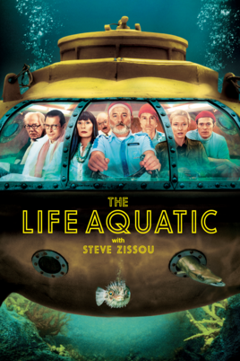
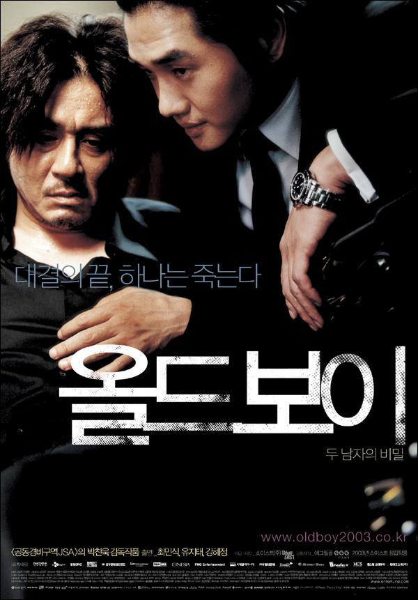

|  |
Life AquaticThe crew aboard Zissou's aging research vessel Belafonte includes his estranged wife Eleanor, chief strategist and financial backer; Pelé dos Santos, a safety expert and Brazilian guitarist who sings David Bowie songs in Portuguese; and Klaus Daimler, the German first mate who views Zissou and Esteban as father figures. |
|  |
Old BoyThe film follows the story of Oh Dae-su, who is imprisoned in a cell which resembles a hotel room for 15 years without knowing the identity of his captor or his captor's motives. When he is finally released, Dae-su finds himself still trapped in a web of conspiracy and violence. His own quest for vengeance becomes tied in with romance when he falls in love with an attractive young sushi chef. |
Le PrestigeAngier and Borden launch their own magic careers. Borden develops a trick he calls the Transported Man, in which he appears to travel instantly between two wardrobes on opposite ends of the stage. Angier hires a double, Root, so he can perform his own version of the trick. The imitation is a success, but Angier is displeased, as he ends the trick hidden under the stage while Root basks in the applause.s |